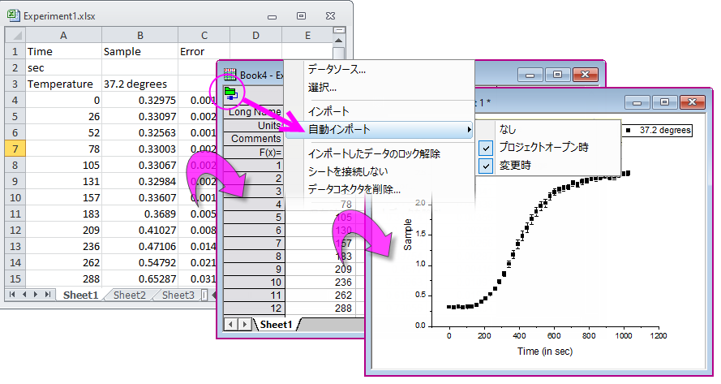
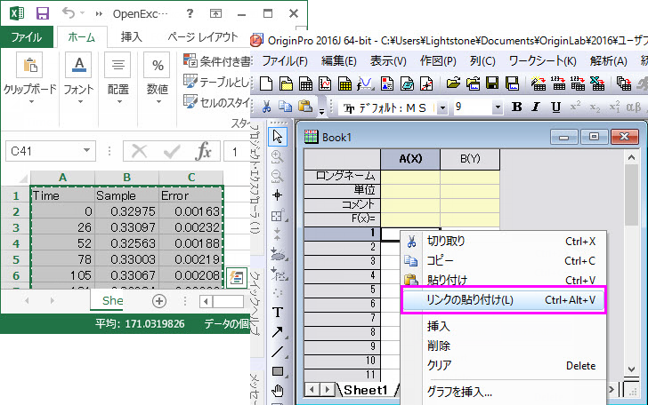

Microsoft Excelの操作
Work-With-Excel
 | Originは、長年にわたり、グラフ作成や解析の使用の制限はあるもののOriginワークスペース内でMSExcelのOLEインスタンスをサポートしてきました。時間の経過とともに、ユーザーから問題の増加が報告され、その結果、OriginLabはExcelのOLEインスタンスを起動するためのユーザーインターフェイスコントロールを削除することを決定しました。
Excelデータのインポートの際には、Excel Data Connectorの使用を強くお勧めします。Excel Connectorは高速かつ、Originのグラフ作成および分析機能に完全にアクセスできます。Excel Connectorがオプションにない場合には、このトピックをご覧ください。
|
OriginでExcelデータを扱う場合、以下の2つの方法があります。
- ExcelファイルをOriginワークブックにインポートする
- クリップボードにExcelデータをコピーして、Originワークブックに貼り付け、またはリンク貼り付けする
|
|
Excelのインポート
|
Excelデータのコピー
|
| 操作方法
|
- メニューからデータ：ファイルに接続：Excelを選択します。
- 標準ツールバーのExcelインポートボタン
 をクリック をクリック
- OriginワークシートにExcelファイルをドラッグアンドドロップ
|
- Excelからデータをコピーし、Origin上で右クリックして貼り付け(またはリンクの貼り付け)
|
| 動作
|
- ExcelデータはOriginのワークブックに読み込まれます。
- インポートする前に、ユーザはインポートする初期シート、ヘッダー行、列ラベル、部分インポート（オプション）の設定を行います。
|
- ExcelデータはOriginのワークブックに貼り付けられます。
- リンクの貼り付けを選択した場合、ExcelデータとOrigin間にDDEリンクが作成されます。Excelデータの変更は全てOriginワークブックでも変更されます。
|
| メタデータの取り扱い
|
- 複数行のヘッダーなどのメタデータは保持されるため、外部のExcelファイルが変更されたときにデータを簡単に再インポートできます。
|
- ヘッダなどのメタデータは手動で追加する必要があります。
|
| グラフ作成
|
|
|
| データ分析
|
- Originの全ての分析機能を使用できます。
- インポートされたExcelワークブックの式はなくなり、対応する値として表示されます。
- 再インポートにより、ソースExcelファイルの変更は、インポートされたワークブック、関連する分析やグラフに反映されます。
|
- Originの全ての分析機能を使用できます。
- ソースExcelデータの変更は動的にOriginのプロジェクトに反映されます。
|
OriginでExcelデータを更新する
Excelファイルを定期的に更新する場合、更新をOriginで反映する方法はいくつかあります。
- すでにExcel Connectorを利用してOriginのワークブックにExcelファイルをインポートしていれば、Originのワークブックに更新されたファイル（保存されている必要があります）が反映されます。
- Excelデータをクリップボードにコピーする場合、Originへの貼り付けの際にリンクの貼り付けを選択します。
変更時のデータ再インポート
データコネクタによるデータのインポートではOriginのワークブックとソースデータにライブリンクが生成されます。ゆえに、ソースデータが更新されたときにはOriginのワークブックやそれに依存したプロットが簡単に更新されます。
- コネクタアイコンをクリックしてインポートを選択すると、Originのワークブックを手動で更新できます。
- Originのワークブックは、コネクタアイコンをクリックして自動インポートから、プロジェクトオープン時または変更時を選択することで自動的に更新できます。

Excel データを外部でコピーし、Originに貼り付け/リンク貼り付け
Excelで開いたワークブックのデータをコピーし、Originに貼り付け/リンクの貼り付けが可能です。これにより、Originのグラフ作図および分析機能を利用できます。Excelデータをリンクとして貼り付けると、Excelワークブックの変更がOriginプロジェクトに動的に反映されます。
- 
 |
- ExcelからOriginにデータをコピーするとき、Excel内で表示される桁数ではなくフル精度でコピーされます。Excelからデータがとても複雑な場合、Originのインポートウィザードのクリックボードからインポートを行います。
- Excelから日付または時間のデータをコピーして貼り付ける場合は、次のFAQを参照してください。
- Excel DDEリンクを削除する方法は、このFAQを参照してください。
|